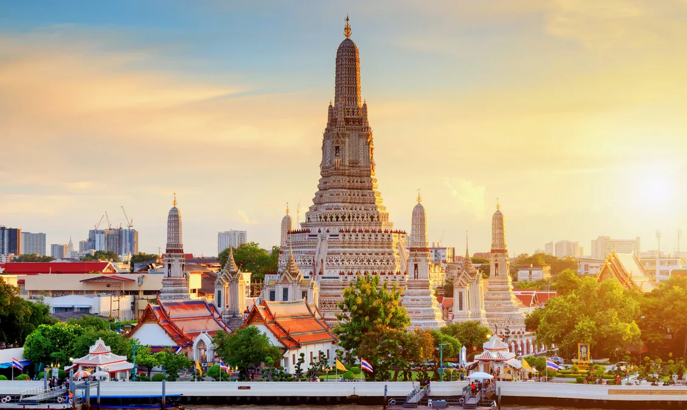
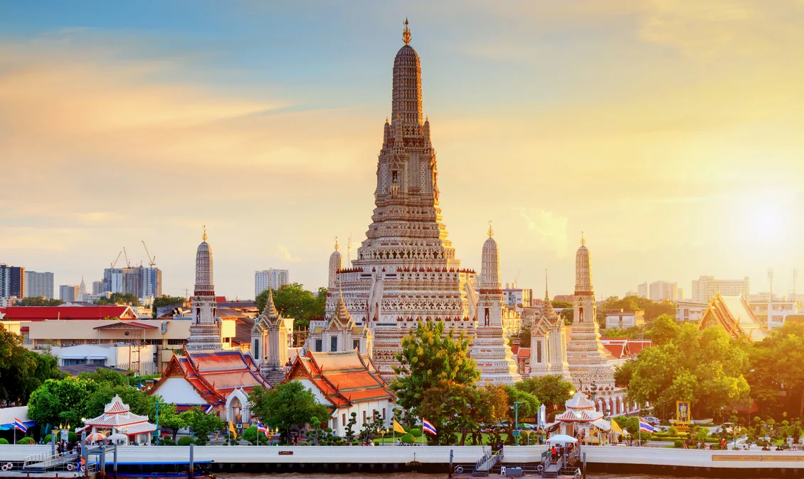

Bangkok, Thai Krung Thep, city, capital, and chief port of Thailand. It is the only cosmopolitan city in a country of small towns and villages and is Thailand's cultural and commercial centre. An all-in-one culture. Bangkok is a city filled with many diversity of people, cultures, and places Most famous for its revered nightlife scene and carefree atmosphere, this is where 99% of all youngsters will find themselves at least once when in Bangkok. It is also an accommodation hotspot for many as a great variety of cheap accommodation types can be found within the vicinity of Khao San Road.
| Wat pho Bangkok |
Chao Phraya Dinner Cruise |
Kidzania Bangkok |
Wat Wat Arun Bangkok  |
| Weather | Next |